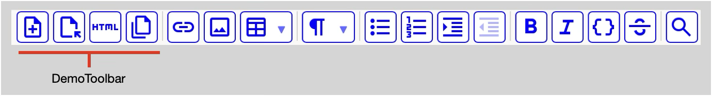

Communicating with the MarkupEditor
The MarkupEditor in its “base” form is a what-you-see-is-what-you-get (WYSIWYG) editor meant to be embedded in an application of some kind. It comes with a configurable and extensible toolbar that provides UI access to its underlying editing functionality. The document you edit with the MarkupEditor is standard HTML with a limited set of supported tags. The document is styled using CSS, which you can override and supplement. As you edit the HTML document, the editor lets you know when changes occur, so you can take action based on your specific application context.
The application environment you’re building-for needs to support a web view, so you can load the MarkupEditor script and use the CSS styling that comes with it. We’re using the nebulous term “application environment” in this document, because that could be Node.js or Electron or MacOS AppKit or iOS SwiftUI or… the list goes on. The language you’re writing your application in could be JavaScript or any other language, as long as the application environment supports a web view and the mechanics of communicating to/from the web view and the MarkupEditor within it.
A key goal of the MarkupEditor is that application developers be able to embed WYSIWYG editing functionality in any environment. They should be able to customize the editor’s appearance and behavior without having to fork the code, or even having to learn much beyond how to get and set the HTML being edited. The MarkupEditor’s scope resembles and is by-design limited to Markdown’s scope. It doesn’t provide any direct support for fonts and styles, positioning text on a page, and other elaborate formatting. Like Markdown, it only supports the limited set of features you need to organize what you’re writing to get your points across effectively. It does not support import/export from/to Markdown or any other document formats. Since a MarkupEditor document consists of standard “clean” HTML without embedded styles or classes, there is an entire world of tools you can use to parse a MarkupEditor document, save it, search it, and export it. If you do transform the MarkupEditor’s clean HTML to some other form, like Markdown, just be aware that what you see in the MarkupEditor may not be what your end-users get.
Let’s take a look at what is required for WYSIWYG editing directly in your web browser or using Node.js. These “essentials” are common to other environments that the MarkupEditor can be used in.
By our nebulous definition, a web browser provides an application environment. Here’s an index.html you can load in your browser to display an editable version of “Hello, world!”:
<!DOCTYPE html>
<html lang="en">
<head>
<title>Hello MarkupEditor</title>
<meta name="viewport" charset="utf-8" content="width=device-width, initial-scale=1.0">
<link href="../styles/markupeditor.css" rel="stylesheet">
</head>
<body>
<div id="editor"></div>
<script src="../src/markupeditor.umd.js"></script>
<script>
new MU.MarkupEditor(document.querySelector('#editor'), {html: '<h1>Hello, world!</h1>'})
</script>
</body>
</html>The essentials involve:
Linking to the MarkupEditor style sheets that are gathered together in markupeditor.css.
Creating an empty editor div to edit in.
Loading the MarkupEditor script markupeditor.umd.js which exposes its public API in a global, MU.
Creating an instance of the MarkupEditor in the editor element, and in this case providing its initial HTML.
These essentials are common whenever you use the MarkupEditor, but the details will vary.
Above, you see the result in the Vivaldi browser. Note the default toolbar shows up without any work on your part. The MarkupEditor lets you edit the document, but there is a very security-limited set of things you can do from a browser. While the browser is pretty much the simplest possible environment to use the MarkupEditor in, it also provides access to an array of development tools for debugging.
Note: If you encounter a MarkupEditor bug, providing a test or usage flow that reproduces the bug in a browser will ensure it can be debugged with no setup barriers, increasing the likelihood of it being worked on.
When you use the MarkupEditor in Node.js, you get access to the file system, among other things. In concrete terms, this means you can fetch file contents without the requirement that the access be gated by a trusted user action, as is required in the browser. The MarkupEditor lets you identify a filename containing the HTML contents it will show. Here’s how the contents of guide.html (which you’re reading now) are loaded into the MarkupEditor:
<!DOCTYPE html>
<html lang="en">
<head>
<title>docs/demo/demo.html</title>
<meta name="viewport" charset="utf-8" content="width=device-width, initial-scale=1.0">
<link href="styles/markupeditor.css" rel="stylesheet">
</head>
<body>
<div id="editor"></div>
<script src="dist/markupeditor.umd.js"></script>
<script>
new MU.MarkupEditor(document.querySelector('#editor'), {filename: "docs/guide/guide.html", base: "docs/guide/"})
</script>
</body>
</html>Note that if you saved the HTML shown above as a file and attempted to load it in your browser, say by double-clicking on the file, it would fail with Failed to load docs/guide/guide.html. You would see the toolbar show up, but the browser fails when fetching guide.html. You can, however, do it with Node.js! Here is a script, guide.js, that can be executed using node guide.js:
const express = require('express');
const app = express();
// Allow the relative references for css and scripts to work
app.use(express.static(`${__dirname}`, { index: false }))
// For parsing application/json
app.use(express.json())
// Load when loading http://localhost:${port}
app.get('/', (req, res) => {
res.send(
`
<!DOCTYPE html>
<html lang="en">
<head>
<title>docs/demo/demo.html</title>
<meta name="viewport" charset="utf-8" content="width=device-width, initial-scale=1.0">
<link href="styles/markupeditor.css" rel="stylesheet">
</head>
<body>
<div id="editor"></div>
<script src="dist/markupeditor.umd.js"></script>
<script>
new MU.MarkupEditor(document.querySelector('#editor'), {filename: "docs/guide/guide.html", base: "docs/guide/"})
</script>
</body>
</html>
`
)
});
app.listen('3000', () => {
console.log(`Server listening at http://localhost:3000`);
});Here we use Express to respond with the HTML we showed earlier when you open your browser on http://localhost:3000. Note that base is passed as part of the MarkupEditor configuration. Under the covers, this ends up adding an HTML base element to the document, so that the img src attribute and other references in the document are specified relative to the HTML document being edited.
There is a more robust version of this script - markupeditor.js in the markupeditor-base project - that you can execute from anywhere, identifying the HTML file to open (or none if you just want an empty document) and the port to listen on. For example:
$ node markupeditor.js docs/demo/demo.html --port 8000
Server listening at http://localhost:8000The MarkupEditor documentation, including this Developer’s Guide, is hosted using GitHub Pages. You can use npm/node to view the docs locally using:
$ npm run docs
> markupeditor-base@0.8.0 predocs
> sh predocs.sh
Updating ./docs dependencies...
cp -f ./dist/markupeditor.umd.js ./docs/src/markupeditor.umd.js
cp -f ./styles/markupeditor.css ./docs/styles/markupeditor.css
cp -f ./styles/markup.css ./docs/styles/markup.css
cp -f ./styles/mirror.css ./docs/styles/mirror.css
cp -f ./styles/toolbar.css ./docs/styles/toolbar.css
> markupeditor-base@0.8.0 docs
> node ./docs/index.js
Server listening at http://localhost:3000Besides invoking node on the index.js in the docs directory, the script runs a “predocs” step that copies the required MarkupEditor files into locations in the docs directory. When the changes are pushed to GitHub, it kicks off a refresh of the project web site. This process makes for a nice closed loop — edit the project web site contents locally using the MarkupEditor, and then update the site when the changes are pushed to GitHub.
This is the extent of “application environments” that are supported out-of-the-box when you install the MarkupEditor base project. It’s the minimum needed to develop and debug the MarkupEditor in its base form. The MarkupEditor can, however, be embedded in other environments. Before we cover that, let’s cover configuration, how you use the MarkupEditor API, and how to hook into the notifications it provides as you edit a document.
So far, we have seen how to pass some initial HTML to the MarkupEditor, and how to identify a filename to open using Node.js. When you want to call into the MarkupEditor, you do that by invoking the public API exposed via the MU object. We saw MU used earlier when we created an instance of MarkupEditor using new MU.MarkupEditor(<target div>, <config>). Let’s examine the configuration passed when the MarkupEditor instance is created.
There are three configuration classes:
ToolbarConfig specifies whether the toolbar itself is visible, which sub-toolbars/dropdowns are visible, and which items are included in each. Refer to src/setup/toolbarconfig.js.
KeymapConfig specifies how editing actions map to key combos (aka hotkeys). Refer to src/setup/keymapconfig.js.
BehaviorConfig specifies various ways the MarkupEditor behaves that are not specific to the menu/toolbar or keymap configurations. Refer to src/setup/behaviorconfig.js.
You can view the full set of options in each configuration class in the MarkupEditor API documentation. Each config provides a standard() static function that returns the default configuration used by the MarkupEditor when you don’t specify a configuration. Note that ToolbarConfig is independent of KeymapConfig because, for example, while you may not want to display undo and redo buttons in the toolbar, you will want to map them to hotkeys like Cmd+S and Shift+Cmd+S (the default in both cases).
A simple way to customize configuration is to use one of the pre-defined static methods to get a config object back. You can then modify that config object as needed. Going all the way back to our “Hello, world!” example, we could add the undo/redo buttons in by making the correction sub-toolbar visible, turn off the ability for users to insert tables, and we could change the hotkey used for adding a link:
<script>
let toolbarConfig = MU.ToolbarConfig.standard(true) // The standard toolbar but with undo/redo showing
toolbarConfig.insertBar.table = false; // Turn off table insert
let keymapConfig = MU.KeymapConfig.standard(); // Grab the standard keymap config as a baseline
keymapConfig.link = ["Ctrl-L", "Ctrl-l"]; // Use Control+L instead of Command+k
new MU.MarkupEditor(
document.querySelector('#editor'), {
html: '<h1>Hello, world!</h1>',
toolbar: toolbarConfig,
keymap: keymapConfig,
placeholder: "<p>Edit document...</p>"
}
)
</script>Besides the html, filename, toolbar, keymap, and behavior properties, you can also pass placeholder html to show when the document is empty. Let’s take a closer look at each of the configuration classes.
The ToolbarConfig is easier to explain with a picture, because it refers to various pieces of the toolbar by name, and the names make more sense when you can see the toolbar. Here is the full toolbar in all its glory. This toolbar was obtained by defining toolbarConfig = MU.ToolbarConfig.full(true) and then passing toolbar: toolbarConfig in the MarkupEditor configuration. (The true argument specifies that undo/redo should be visible in the full toolbar.) Note that the ToolbarConfig.standard() does not display undo/redo, underline, and subscript/superscript.

You can control the visibility of each of the individual bars and menus by name; for example, toolbarConfig.visibility.correctionBar = false or toolbarConfig.visibility.search = false. Within the bars and menus, you can also control what is visible. For example, toolbarConfig.insertBar.table = false will remove the tableMenu. Within the tableMenu, you can control whether it includes a Header or Border item. The individual controls are itemized with comments in src/setup/toolbarconfig.js. It’s also possible to turn off the overall toolbar using toolbarConfig.visibility.toolbar = false. This is useful when you define your own toolbar, something that is done in the Swift MarkupEditor.
The toolbar attempts to conform to Apple’s Human Interface Guidelines in terms of size. It scales properly with zoom-in and zoom-out, but is not resizable by configuration. You could adjust or override the settings in styles/toolbar.css if needed. Note that the toolbar autosizes to fit within the containing element width using a … (aka “More” button) on the right when the total item width is too large to fit. Pressing the More button will expose the missing elements using a sub-toolbar. The toolbar responds to resizing events, so window resizing (or device rotation) will re-evaluate whether the More button is needed to accommodate the contents.
The names in the styleMenu can be set as part of the ToolbarConfig. For example, to use “Normal” for the <P> element rather than “Body”, you would specify toolbarConfig.styleMenu.p = “Normal”. If you want to remove an item, set its value to null. For example, toolbarConfig.style.pre = null will remove the Code item from the styleMenu (because code blocks are <pre><code> in the HTML).
You can re-order the toolbar items using toolbarConfig.ordering. The default values in ascending order left to right go from 10 for the correctionBar, 60 for search. So, for example, you could put the formatBar between the correctionBar and insertBar using toolbarConfig.ordering.formatBar = 15. The ordering of items within the individual bars and menus is not configurable.
The toolbar icons are not currently configurable. Toolbar icons are from Google’s Material Design Icons set and downloaded as SVG from that site. The SVG definitions are in src/setup/icons.js. You can extend the toolbar by prepending or appending a custom group of icons and attaching commands to them.
The KeymapConfig follows ProseMirror conventions. To quote the comments from keymap.ts…
/// Key names may be strings like `"Shift-Ctrl-Enter"`—a key /// identifier prefixed with zero or more modifiers. Key identifiers /// are based on the strings that can appear in /// [`KeyEvent.key`](https:///developer.mozilla.org/en-US/docs/Web/API/KeyboardEvent/key). /// Use lowercase letters to refer to letter keys (or uppercase letters /// if you want shift to be held). You may use `"Space"` as an alias /// for the `" "` name. /// /// Modifiers can be given in any order. `Shift-` (or `s-`), `Alt-` (or /// `a-`), `Ctrl-` (or `c-` or `Control-`) and `Cmd-` (or `m-` or /// `Meta-`) are recognized. For characters that are created by holding /// shift, the `Shift-` prefix is implied, and should not be added /// explicitly. /// /// You can use `Mod-` as a shorthand for `Cmd-` on Mac and `Ctrl-` on /// other platforms. /// /// You can add multiple keymap plugins to an editor. The order in /// which they appear determines their precedence (the ones early in /// the array get to dispatch first).
It’s likely that the hotkeys you want to use are specific to your application environment. (In fact, some of the standard() defaults conflict with web browser navigation defaults.) In the end, there is no right way for a library to set up key bindings, so you should make sure they are set up as you want. As noted earlier, the ToolbarConfig and KeymapConfig are independent, but by default only the key mappings for visible toolbar elements are set up. Undo and redo are the exceptions to this rule and are always set up whether the correctionBar is visible or not. The desktop() KeymapConfig settings are useful for a desktop app, since they include all mappings that can then be used to set up a menu independently of the toolbar, something that is used in the MarkupEditor desktop version.
A common and simple case for BehaviorConfig is to control whether the editor takes focus after it loads. Sometimes you want to be able to type immediately, and other times you want your user to click in the editor before typing. You can control this behavior by setting focusAfterLoad to true (the default) or false. The other options in BehaviorConfig are for more advanced usage and are discussed in more detail later:
selectImage: Whether to show a "Select..." button in the Insert Image dialog. You need access to the file system and facilities of the application environment the MarkupEditor is embedded in.
insertLink: Whether to defer to the MarkupDelegate rather than use the default LinkDialog. You can replace the default LinkDialog used to insert and edit links with your own by implementing markupInsertLink in your MarkupDelegate.
insertImage: Whether to defer to the MarkupDelegate rather than use the default ImageDialog. You can replace the default ImageDialog used to insert and edit images with your own by implementing markupInsertImage in your MarkupDelegate.
You can prepend and append your own toolbar to the MarkupEditor toolbar you have configured. For more detail, take a look at the MarkupEditor Demo in the docs/demo directory. The intent of the demo to provide a document that contains all the elements supported in the MarkupEditor, and to describe how to use the editor. But, to make the demo more useful, even in a browser, it was helpful to provide some tools beyond the default toolbar. This is done by prepending a DemoToolbar:

Here is part of the demotoolbar.js code used to create the DemoToolbar…
/** A class holding the command items and functionality for a File toolbar that is prepended to the MarkupEditor toolbar */
class DemoToolbar {
constructor() {
this.menuItems = this.buildMenuItems()
}
/** SVG defining icons by key, obtained from https://fonts.google.com/icons under https://openfontlicense.org license. */
icons = {
new: {
// <span class="material-symbols-outlined">note_add</span>
svg: '<svg xmlns="http://www.w3.org/2000/svg" height="24px" viewBox="0 -960 960 960" width="24px" fill="#1f1f1f"><path d="M440-240h80v-120h120v-80H520v-120h-80v120H320v80h120v120ZM240-80q-33 0-56.5-23.5T160-160v-640q0-33 23.5-56.5T240-880h320l240 240v480q0 33-23.5 56.5T720-80H240Zm280-520v-200H240v640h480v-440H520ZM240-800v200-200 640-640Z"/></svg>'
},
open: {
// <span class="material-symbols-outlined">file_open</span>
svg: '<svg xmlns="http://www.w3.org/2000/svg" height="24px" viewBox="0 -960 960 960" width="24px" fill="#1f1f1f"><path d="M240-80q-33 0-56.5-23.5T160-160v-640q0-33 23.5-56.5T240-880h320l240 240v240h-80v-200H520v-200H240v640h360v80H240Zm638 15L760-183v89h-80v-226h226v80h-90l118 118-56 57Zm-638-95v-640 640Z"/></svg>'
},
html: {
// <span class="material-symbols-outlined">html</span>
svg: '<svg xmlns="http://www.w3.org/2000/svg" height="24px" viewBox="0 -960 960 960" width="24px" fill="#1f1f1f"><path d="M0-360v-240h60v80h80v-80h60v240h-60v-100H60v100H0Zm310 0v-180h-70v-60h200v60h-70v180h-60Zm170 0v-200q0-17 11.5-28.5T520-600h180q17 0 28.5 11.5T740-560v200h-60v-180h-40v140h-60v-140h-40v180h-60Zm320 0v-240h60v180h100v60H800Z"/></svg>'
},
copy: {
// <span class="material-symbols-outlined">file_copy</span>
svg: '<svg xmlns="http://www.w3.org/2000/svg" height="24px" viewBox="0 -960 960 960" width="24px" fill="#1f1f1f"><path d="M744-192H312q-29 0-50.5-21.5T240-264v-576q0-29 21.5-50.5T312-912h312l192 192v456q0 29-21.5 50.5T744-192ZM576-672v-168H312v576h432v-408H576ZM168-48q-29 0-50.5-21.5T96-120v-552h72v552h456v72H168Zm144-792v195-195 576-576Z"/></svg>'
}
}
/** Return an array of MenuItems */
buildMenuItems() {
let newItem = MU.cmdItem(
this.newDocument.bind(this),
{
enable: () => { return true },
title: 'New document',
icon: this.icons.new
}
)
let openItem = MU.cmdItem(
this.openDocument.bind(this),
{
enable: () => { return true },
title: 'Open document',
icon: this.icons.open
}
)
let htmlItem = MU.cmdItem(
this.toggleRaw.bind(this),
{
enable: () => { return true },
title: 'Show HTML',
icon: this.icons.html
}
)
let copyItem = MU.cmdItem(
this.copyRaw.bind(this),
{
enable: () => { return true },
title: 'Copy HTML',
icon: this.icons.copy
}
)
return [newItem, openItem, htmlItem, copyItem]
}
newDocument() {
MU.emptyDocument()
this.updateRaw()
}
// ... more code ...
}The code will be loaded as a script and has access to the global MU to execute MarkupEditor functionality. When we instantiate the DemoToolbar, we set up menuItems, an array of MenuItem instances, each of which is created using the MU.cmdItem function. The MU.cmdItem function takes a command/function as its first argument along with options that define when the MenuItem should be enabled, what to use as a title when hovering over it, and what to display as its icon. The icons are defined using SVG taken from Google’s Material Design Icon set. For the one function included in the snippet above, newDocument, we use the MU.emptyDocument() function and then update the demo’s “raw HTML” that allows the user to see the underlying HTML as it changes.
In the index.html that loads the demo, we load the demotoolbar.js script, and then after creating the MarkupEditor instance, we create a DemoToolbar instance and prepend its menu items:
<script src="src/demotoolbar.js"></script>
<script>
const markupEditor = new MU.MarkupEditor(
document.querySelector('#editor'),
{
delegate: new DemoDelegate(),
placeholder: 'Edit document...',
filename: 'demo.html',
}
)
// Instantiate the DemoToolbar and place its `menuItems` at the front of the toolbar.
const demoToolbar = new DemoToolbar()
MU.prependToolbar(demoToolbar.menuItems)
</script>In addition to prependToolbar and appendToolbar, the key elements and functions used to create the MarkupEditor toolbar are available to you to create your own, including:
MenuItem
Dropdown
DropdownSubmenu
cmdItem
renderGrouped,
renderDropdownItems
The toolbarView itself is also available to you if needed. Refer to the code in the MarkupEditor Demo and in the MarkupEditor itself to learn more about how a toolbar and its MenuItems and Dropdowns are built.
It’s important to recognize where your code is executing when using the MarkupEditor. In the examples we’ve shown so far, we are executing a script that is running inside of the web view itself. The global MU was created when you loaded markupeditor.umd.js earlier, so it’s available for you to reference directly in any script you load after markupeditor.umd.js. When you are executing in the application environment process you used to create and hold the web view, like Node.js or an iOS app, you will have to access MU with a call to something like executeJavaScript. We will cover that a little later.
We’ve see how to set up the initial HTML when you create a MarkupEditor instance in a web view by passing html or filename as part of its configuration. If your environment provides access to the file system and perhaps platform-native dialogs for selecting a file, you will want to get the MarkupEditor contents to save to the file, or set the MarkupEditor contents from the file contents. To get the MarkupEditor contents:
let contents = MU.getHTML()and to set the contents to an HTML string called htmlString:
MU.setHTML(htmlString)The MarkupEditor uses the following HTML elements:
Paragraph Styles: <H1>, <H2>, <H3>, <H4>, <H5>, <H6>, <P>. <P> is the default style, also referred to as "Body" in various places. The <CODE> element is supported as a paragraph style or an inlined format. When used as a paragraph style, it is output as <PRE><CODE> to preserve its exact form.
Formatting: <STRONG>, <EM>, <U>, <CODE>, <S>, <SUB>, <SUP>.
Images: <IMG>.
Links: <A>.
Lists: <UL>, <OL>, <LI>.
Tables: <TABLE>, <TR>, <TH>, <TD>.
Indenting: <BLOCKQUOTE>.
When you use setHTML or paste HTML content into the MarkupEditor, it will ignore any elements that do not correspond to these tags. The MarkupEditor will automatically convert <B> to <STRONG>, <I> to <EM>, and <DEL> to <S>. It will also convert some styling, like font-style=italic to the corresponding HTML element. The end result is that you can’t break the MarkupEditor by pasting or setting arbitrary HTML, but it will ingest only what it can display properly and that you can properly edit.
To learn more about how the MarkupEditor interprets incoming HTML and outputs HTML, look at src/schema/index.js in the project repository, and read about ProseMirror, which is doing all the heavy lifting behind the scenes.
The MarkupEditor makes callbacks to a delegate, aka the MarkupDelegate, as you edit the document and its state changes. You can view the full of set callbacks in the MarkupEditor API. Let’s take a look at how to set up your MarkupDelegate and make use of the callbacks.
Here’s a simple MarkupDelegate. We can put it in a mydelegate.js file and then load it via a script. Its methods will be called when the MarkupEditor is “ready” and when you type into the document or otherwise make editing changes:
class MarkupDelegate {
// Do something in your app when all scripts are loaded and it's ready.
markupReady() {
// For now, just log...
console.log('The MarkupEditor is ready')
}
// Do something in your app when the document receives input from typing or pasting, etc.
// For example, you might track changes to enable an auto-save feature.
markupInput() {
// For now, just log...
console.log('The MarkupEditor received input')
}
}You can load the script and pass the MarkupDelegate instance to the MarkupEditor. Here is what it would look like to load a demo.html file and pass this delegate instance to the MarkupEditor:
<script src="../src/markupeditor.umd.js"></script>
<script src="src/mydelegate.js"></script>
<script>
const markupEditor = new MU.MarkupEditor(
document.querySelector('#editor'), {
delegate: new MarkupDelegate(),
placeholder: 'Edit document...',
filename: 'demo.html',
}
)
</script>You can call your MarkupDelegate anything you want. The MarkupEditor will only invoke the callbacks if the delegate exists and the function is defined. For example, if you don’t define markupInput, it just won’t be called.
Again, the code in the MarkupDelegate above will execute in the web view. It has access to all of the MarkupEditor functionality via the MU global. Often, access to MU and its functionality will be all you’ll need. For example, the MarkupEditor demo uses markupInput to update the view of the “raw HTML” as the user edits the document. You can also use the MarkupDelegate to communicate with your application environment, but the mechanism for doing that will be specific to the application environment.
At this point we have covered:
How to set up up a web view containing the MarkupEditor and its associated scripts and styling.
How to set up a web view containing the MarkupEditor in a Node.js server using Express.
How to pass configuration options to the MarkupEditor.
How to use a MarkupDelegate to receive notifications as the state changes in the document you’re editing.
How to invoke MarkupEditor functionality from with the web view using the MU global.
What remains is how to access to your application environment, and then in turn, to invoke MarkupEditor functionality from your application environment. The “how” is specific to your environment. We will use a concrete example of selecting an image from the file system when using the MarkupEditor with Electron. The code will all be Electron-specific, but the concepts will be similar in other environments. Ultimately they all need to deal with interprocess communication.
If you enable “selectImage” in BehaviorConfig, the MarkupEditor shows a “Select…” button in the dialog for inserting images:
Why even make “selectImage” an option? Because:
You need access to the file system, which is dependent on your application environment.
The MarkupEditor itself doesn’t know how to do this and has very restricted access to the file system.
You may be using the MarkupEditor in an environment where you don’t want to allow image selection but still want to be able to insert images by URL.
As an app developer, you take on a lot of issues when you allow local images to be inserted in your document. For example… What do you do with the image once you’ve selected it? Do you set your image src to the file itself, or do you encode the file data and embed it? If you point to the file, then what happens when you move your document around or the image file no longer exists? These are all the kinds of issues that separate a demo from a product!
When you hit the “Select…” button, the MarkupEditor closes the dialog and invokes markupSelectImage in your MarkupDelegate. Remember, your MarkupDelegate is executing in the web view and still has very restricted access to the file system. In the Electron app, your MarkupDelegate would look like this:
class MarkupDelegate {
markupSelectImage() {
// Reference the definition in preload.js
window.markupAPI.selectImage()
}
}The window.markupAPI is defined in an Electron preload script preload.js:
const { contextBridge, ipcRenderer } = require('electron');
/** Define the markupAPI endpoints exposed via windowEvents in main.js */
contextBridge.exposeInMainWorld('markupAPI', {
selectImage: () => { ipcRenderer.send('selectImage') },
});Meanwhile, in our Electron app’s main.js, when the app is ready, we set the app to respond to this new custom event, selectImage:
ipcMain.on('selectImage', handleSelectImage)When the event is triggered, it will invoke our handleSelectImage. Finally(!!!) we can use Electron’s showOpenDialog to select the file with a native dialog and insert that image data into the MarkupEditor document:
async function handleSelectImage() {
const { canceled, filePaths } = await dialog.showOpenDialog({
properties: ['openFile'],
filters: [
{ name: 'Image', extensions: ['png', 'jpg', 'jpeg', 'gif'] }
]
});
if (!canceled) {
let filePath = filePaths[0]
fs.readFile(filePath, 'base64', (err, data) => {
if (err) {
console.error('Error reading file:', err);
return;
}
let src = srcFromData(filePath, data)
if (!src) {
console.error('Unsupported media type')
return
}
let insertImageCommand = `MU.insertImage("${src}")`
getWebContents()?.executeJavaScript(insertImageCommand)
.then(()=>{console.log("Done insertImage")})
.catch((error) => {
console.error('Error inserting image:', error);
});
});
}
}We can then pass the data as the image src using MU.insertImage. At this point, though, we are executing in the Electron main process, not in the web view which is part of Electron’s renderer process. We have to invoke MU.insertImage using the Electron WebContents and its executeJavaScript method, passing the command to invoke in the web view along with the src data we got from the selected file. MU.insertImage inserts the image at the selection point and updates the document.
Two “insert” options in the MarkupEditor toolbar - insert link and image - involve user input of some kind. Each uses a MarkupEditor-supplied dialog with input fields that may or may not be appropriate in your application context. (The table insert operation is done using a drop-down menu, not a dialog.) Each dialog can be replaced with your own code without modifying the MarkupEditor itself. Do this by setting insertLink and/or insertImage to true in BehaviorConfig. If you do this with insertLink, your MarkupDelegate’s markupInsertLink method will be called instead of presenting the default LinkDialog. If you do this with insertImage, your MarkupDelegate’s markupInsertImage method will be called instead of presenting the default ImageDialog. If you are using Electron, you can base your implementation of these methods in your MarkupDelegate on the flow discussed above for markupSelectImage.
You can find the Electron-specific code discussed here in the source of the MarkupEditor Desktop app. It supports local images and saves their contents to file at “save time” alongside the document being edited. The desktop app was used to edit this entire Developer’s Guide.
The MarkupEditor includes over 200 JEST-based tests that exercise MarkupEditor functionality across a variety of conditions. Although the MarkupEditor uses ProseMirror, which has a large set of tests itself, the usage in the MarkupEditor can often be different. For example, indenting and outdenting in the MarkupEditor can be applied both to blocks like paragraphs, but also to lists. In lists, indent/outdent is interpreted as “wrap in a sublist” or “lift out of the list” whenever possible. Actions for selections across ranges of elements in the MarkupEditor document are also applied as much as possible. The goal when applying an action is to follow the principle of least astonishment - the editor should behave like you expect. You can always undo if it doesn’t. However, if an editing action produces an unexpected or incorrect behavior, please file an issue with details, or submit a pull request with updates to the tests.
The tests are in the test directory and are driven from a single test.js file. The tests are organized into a number of test suites, each one of which is defined using a JSON file. The JSON file definition makes it possible to share the test data in other environments, such as the Swift MarkupEditor, which uses a non-JavaScript test framework. Each JSON file contains an array that translates to instances of HtmlTest as defined in htmltest.js.
The primary function of an HtmlTest is to define the description, startHtml, endHtml, and the action that will be applied to it. For testing purposes, the startHtml and endHtml mark the selection using a single sel character (by default, a vertical bar: |). We can set the selection in the document based on startHtml, and we can ensure that the selection matches endHtml after applying the action. By default, undo and redo are also run after applying the action, with the test making sure results match startHtml and endHtml respectively. (There are some exceptional tests where undoHtml is defined separately from startHtml.) You can skip a test using skipTest, which will result in the test showing as “passed”, but the description will be prepended with “SKIPPED…” to make it visible. There are also flags to skip setting the initial HTML (skipSet) and undo/redo (skipUndoRedo) if needed.
The action and a single optional arg are translated into a JavaScript function using the Function constructor. The MU global can be referenced in your action string.
The npm test script builds the MarkupEditor first, and then executes all the test suites.
$ npm run test
> markupeditor-base@0.8.4 pretest
> npm run build
> markupeditor-base@0.8.4 build
> rollup -c
src/main.js → dist/markupeditor.umd.js...
created dist/markupeditor.umd.js in 338ms
src/main.js → dist/markupeditor.cjs.js, dist/markupeditor.esm.js...
created dist/markupeditor.cjs.js, dist/markupeditor.esm.js in 75ms
> markupeditor-base@0.8.4 test
> jest
Debugger listening on ws://127.0.0.1:50799/3467f93f-4c75-4c4e-925d-e59cd9d7d47a
For help, see: https://nodejs.org/en/docs/inspector
Debugger attached.
PASS test/test.js
Ensure baseline behavior works as expected.
✓ Simple test (26 ms)
✓ Extract when selection begins in one styled list item, ends in another (21 ms)
✓ Extract when selection is in a table (10 ms)
[... snipped out many other tests ...]
Insert link at various locations.
✓ Link in P - Paste link at a fully-selected word (6 ms)
✓ Link in P - Paste link at end of a word (5 ms)
✓ Link in P - Paste link at beginning of a word (4 ms)
✓ Link in P - Paste link at beginning of paragraph (5 ms)
✓ Link in P - Paste link at end of paragraph (4 ms)
Search forward and backward in various scenarios.
✓ Exact word match forward (4 ms)
✓ Exact word match backward (3 ms)
✓ Partial word match forward (3 ms)
✓ Partial word match backward (4 ms)
✓ Mixed case word match forward (4 ms)
✓ Mixed case word match backward (4 ms)
✓ Mixed case search forward for lowercase word (3 ms)
✓ Mixed case search backward for lowercase word (4 ms)
✓ Search forward with apostrophe (3 ms)
✓ Search backward with apostrophe (3 ms)
✓ Search forward with apostrophe and quotes (4 ms)
✓ Search backward with apostrophe and quotes (3 ms)
✓ Search forward with smart quotes (4 ms)
✓ Search backward with smart quotes (3 ms)
✓ Search forward with smart apostrophe (4 ms)
✓ Search backward with smart apostrophe (3 ms)
✓ Search forward with mixed smart apostrophe and quotes (4 ms)
✓ Search backward with mixed smart apostrophe and quotes (3 ms)
✓ Search forward relative to selection (3 ms)
✓ Search backward relative to selection (4 ms)
Test Suites: 1 passed, 1 total
Tests: 225 passed, 225 total
Snapshots: 0 total
Time: 1.51 s, estimated 2 s
Ran all test suites.
Waiting for the debugger to disconnect...
$ In some environments - specifically iOS apps and VSCode - you will want to get document state changes and other messages at a lower level than the MarkupDelegate. That level is the MessageHandler. The MarkupEditor’s default MessageHandler receives and processes postMessage as the document state changes, which it then passes-on to the MarkupDelegate (if the delegate exists and if the callback method exists in the delegate). Most developers will probably not even be aware that the MessageHandler exists. The MarkupDelegate callbacks will be sufficient for most developers.
The MessageHandler responds to the same kind of messages as the MarkupDelegate, but it sometimes does its own processing before informing the MarkupDelegate of the specific state change. For example, in the case of “ready”, the MessageHandler loads the initial HTML that was provided in the configuration or retrieves the contents of the filename, and then it loads that HTML into the document.
postMessage(message) {
let config = this.markupEditor.config
let delegate = config.delegate
switch (message) {
// The editor posts `ready` when all scripts are loaded, so we can set the HTML. If HTML
// is an empty document, then the config.placeholder will be shown.
case 'ready':
this.loadContents(config)
delegate?.markupReady && delegate?.markupReady(this.markupEditor)
return
... more cases
}
...
}By the time your delegate receives markupReady, the document has been loaded and is ready to edit. This approach hides the complexity of fetching the file contents and dealing with failures. It reduces your input simply to providing a file name and avoids the MarkupDelegate having to decipher message types like the MessageHandler does.
For environments like iOS or VSCode, and perhaps others, you should set the MarkupEditor’s MessageHandler to one that is appropriate for the specific environment using MU.setMessageHandler. When you do that, your MessageHandler is responsible for everything that the default MarkupEditor MessageHandler does. For example, if you don’t load the html or filename contents when you receive the “ready” message, then nothing will show up in the editor.
In VSCode, you would set the MessageHandler like this:
vscode = acquireVsCodeApi();
MU.setMessageHandler(vscode);Now when the MarkupEditor executes its callbacks about document state changes (which it does in a VSCode WebviewPanel using messageHandler?.postMessage(message)), the messageHandler is vscode. When we created the VSCode WebviewPanel, we told it how to respond to messages:
// Set up the message handler for messages coming from the webview
webviewPanel.webview.onDidReceiveMessage(this.handleMessage.bind(this));The messages in VSCode are JSON objects that include a command property which contains the message sent by the MarkupEditor callback.
You can review the source code for the MarkupEditor VSCode extension project for more details. Its MarkupCoordinator does the setup of the WebviewPanel, loading the MarkupEditor and dealing with the callbacks.
In an iOS project, you don’t have to set the MessageHandler explicitly, because the MarkupEditor sets it to window.webkit?.messageHandlers?.markup by default. This handy bit of legacy for iOS (and Mac Catalyst) developers exists because the MarkupEditor emerged first for Swift developers looking for WYSIWYG editing functionality.
In Swift, the MarkupEditor is embedded in a WKWebView. When messageHandler?.postMessage(message) is invoked, the message is handled by the WKScriptMessageHandler. The WKScriptMessageHandler for the Swift MarkupEditor is an instance of MarkupCoordinator, and messages are received in userContentController(_:didReceive:).
One other detail of the Swift MarkupEditor is that the toolbar is entirely implemented in SwiftUI. It uses the MarkupEditor with ToolbarConfig.visibility.toolbar = false. When the SwiftUI toolbar buttons are pressed, they directly invoke the MarkupEditor functionality using WKWebView’s executeJavaScript function.
You can review the source code and README for the Swift MarkupEditor project for more details.
The MarkupEditor is built using ProseMirror. ProseMirror is a toolkit for building an editor. It’s well-documented, well-architected, and has a lively and supportive forum. You should support it if you can, particularly if you use the MarkupEditor to make a profit. If you want to modify the MarkupEditor itself, you will need to understand quite a bit about ProseMirror, a topic that is beyond the scope of this document. This section will cover a bit about the build and the structure of the MarkupEditor, as a way to help if you need to or want to modify it. You should be familiar with the README in the repository.
As identified in the project’s package.json files section, there are two directories containing the critical files needed to use the MarkupEditor: dist and styles.
The styles directory contains css files needed by the editor. There are three files that need to be loaded in a specific order:
mirror.css: Styling needed to support basic ProseMirror editing, including the gap cursor and selection behavior.
markup.css: Styling needed to support basic MarkupEditor editing. For example, styling for the elements supported by the MarkupEditor and for resizing images.
toolbar.css: Styling needed for the toolbar. For example, how MenuItems and Dropdowns are styled.
To make loading the styles simpler, the directory contains a markupeditor.css that you can use, which includes the other css files in the proper order.
The dist directory contains the MarkupEditor JavaScript combined with its ProseMirror dependencies. The dist directory is produced using rollup. It contains the same content bundled in various ways. The only format discussed and used here is the Universal Module Definition: markupeditor.umd.js. The corresponding CommonJS (markupeditor.cjs.js) and ECMAScript Module (markupeditor.esm.js) forms are also provided for convenience. The npm build command invokes rollup -c to produce the dist directory contents as specified in rollup.config.mjs.
All the MarkupEditor-specific JavaScript source code is held within src/js. One of rollup's key features is tree-shaking, ensuring that only code used by the MarkupEditor is included. So, while it's possible that src/js contains code that is not reachable from the MarkupEditor, rollup ensures that only code reachable from src/js/main.js is included in the final dist/markupmirror.umd.js. The rollup-produced code in dist/markupeditor.umd.js is still readable and debuggable and includes comments.
The following file names and directories are relative to src/js. We have covered the various config files and the MessageHandler elsewhere, so they will not be discussed more here.
main.jsEverything starts at main.js. It creates the ProseMirror EditorView with an initial EditorState based on the Schema defined in schema/index.js. The EditorState includes a set of MarkupEditor-specific Plugins defined in setup/index.js. The view includes MarkupEditor-specific NodeViews defined in markup.js. It also includes special handling of some events to notify the Swift side of state changes. It's important to note that main.js specifies - in its exports - what the MarkupEditor public API is.
markup.jsThis is the heart of the MarkupEditor functionality. As we have seen in earlier examples, the exported functions are invoked from with the prefix MU. For example, the JavaScript function to toggle the current selection to bold:
export function toggleBold() {
_toggleFormat('B');
};is invoked from within a script as MU.toggleBold(). Similarly, when invoked from, say, Electron, you would use evaluateJavaScript to access the same function.
Note that the exported functions in markup.js do not comprise the MarkupEditor API. The exports in main.js define the MarkupEditor API.
Included in markup.js are two ProseMirror NodeViews: ImageView and DivView. NodeViews provide special handling when rendering a ProseMirror Node. For example, the ImageView lets us handle image resizing in the MarkupEditor using a combination of CSS styling of resize handles and the logic in the ResizableImage class defined in markup.js.
setup/index.jsThe setup/index.js file defines and returns the set of ProseMirror Plugins used by the MarkupEditor. These plugins are loaded from main.js. The plugins are commented reasonably well, but details of the code and what a ProseMirror Plugin is, are beyond the scope of this document.
setup/keymap.jsSets up the keymapping/hotkeys for the MarkupEditor as specified in setup/keymapconfig.js. Beyond the ProseMirror example key mappings, the MarkupEditor includes list handling and table selection/navigation. The MarkupEditor also chains commands to Enter and Delete that invoke stateChanged (and potentially search) as needed.
schema/index.jsFrom the ProseMirror Reference manual:
Every ProseMirror document conforms to a schema, which describes the set of nodes and marks that it is made out of, along with the relations between those, such as which node may occur as a child node of which other nodes.
Basically, if it's not defined in the schema, then it cannot exist in a MarkupEditor document. For example, if you attempt to load HTML containing SPAN elements, they will be ignored. (This is not strictly true, since the MarkupEditor preprocesses HTML to extract SPAN contents that will be recognized by the MarkupEditor as defined in the Schema.) The end result is that MarkupEditor only produces "clean" HTML documents, not ones littered with SPANS and styles. You can paste from an HTML page in your browser, which often contains gnarly HTML because of whatever the web site used to produce it, but it will be brought into the MarkupEditor containing only the elements defined in the schema.
This file defines the Schema for the MarkupEditor. It's similar to the ProseMirror example, but includes such things as DIV and BUTTON to support usage of multiple contenteditable divs in the Swift MarkupEditor.